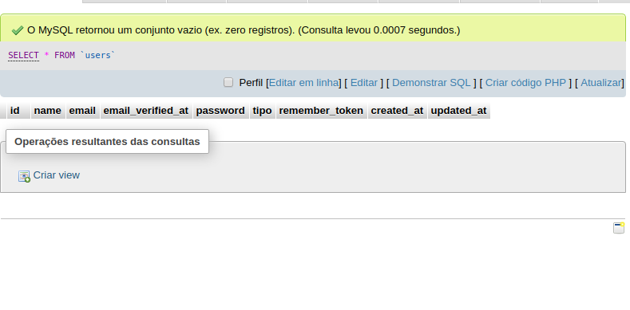
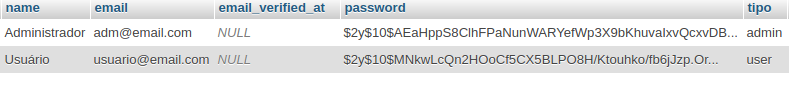
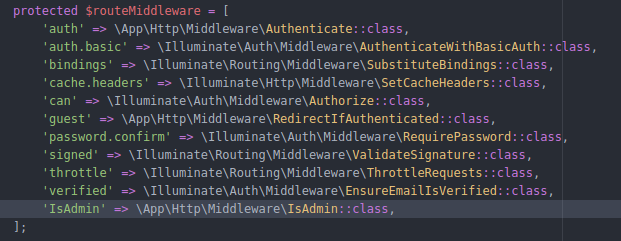

middlewares
Validando Acessos
Um Middleware é um filtro de requisições do laravel. Você já deve ter notado que nossa aplicação possui falhas graves de segurança, como por exemplo, qualquer usuário mesmo sem fazer login pode cadastrar, alterar e excluir registros.
Através dos mecanismos de autenticação e Middlewares do laravel vamos implementar algumas regras básicas de segurança.
1-Usuários que não fizerem login não poderão ter acesso a nada, somente a home page.
2-Usuarios comuns que fizerem login terão acesso aos posts somente para leitura.
3-Somente os usuários logados como administradores poderão cadastrar, alterar e excluir categorias e artigos.
Para implementar nossas regras vamos precisar alterar a tabela users e adicionar um campo 'tipo' que guardará o tipo de usuário, que será user ou admin.
Abra o arquivo referente a criação da tabela users em database/migrations.
Na função up() adicionaremos o campo tipo no schema da criação da tabela:
Repare que utilizamos default('user') na linha que cria o tipo do usuário, isto serve para que cada usuário que se cadastre seja automaticamente um usuário comum, e não um administrador.
Agora utilizaremos o comando abaixo para apagar as tabelas antigas e recriá-las aplicando nossa alteração:
E ao consultarmos nossa tabela users no phpMyAdmin podemos notar que um campo tipo foi adicionado.

É por meio deste novo campo que iremos controlar o acesso aos dados e formulários do nosso projeto. E é aqui que entram os Middlewares. São classes de validação que podem validar praticamente tudo, e as utilizaremos para validar nosso controle de acesso.
Antes de prosseguir vamos criar um usuário Administrador e um usuario comum para que posteriormente possamos efetuar nosso teste.
Criaremos esses usuários no arquivo DatabaseSeeder.php dentro de database/seeds. Abra o arquivo e deixe a função run() como abaixo:
Execute o comando abaixo para enviar estes usuários ao banco:
E veremos nossos usuários cadastrados na base:

O laravel ja traz o Auth, um sistema de autenticação capaz de validar se o usuário está logago ou não.
Assim nos resta criar o middleware responsável por validar se o usuário é administrador (tipo = Admin).
Se tudo estiver ok, o middleware criado poderá ser visto em App/Http/Middleware:

Dentro de nosso middleware IsAdmin, verificaremos se está logado e, caso contrário redirecionamos para a tela de login.
Também verificamos se é admin caso contrário redirecionamos para a página inicial '/'.
Para nosso middleware funcionar temos que registrá-lo no nosso kernel.php que está na pasta app/http.

Agora criamos uma função construtora na controller de Artigo e Categoria. Dentro dela utilizamos a middleware auth para verificarmos se o usuário está logado e apto a visualizar aquele conteúdo,
e também nossa middleware IsAdmin. Note que para nossa middlerare criamos uma excessão ao index, ou seja, usuários que não são administradores podem visualizar o conteúdo de nossa index sem problemas!